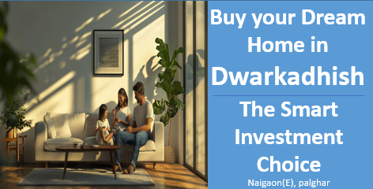

अपने सपनों का घर खरीदें द्वारकाधीश में:"समझदारी से किया गया निवेश
नायगांव की बेहतरीन विशेषताएँ
दिलचस्प प्राकृतिक दृश्य और समृद्ध हरियाली
नायगांव सच में प्राकृत सौंदर्य से परिपूर्ण है, जो हरे-भरे स्थानों और शांतिपूर्ण परिदृश्यों से सजा हुआ है। यहाँ का शांत वातावरण विश्राम और तरोताजा होने के लिए एक आदर्श स्थान बनाता है। अपनी जीवंत हरियाली और खूबसूरत दृश्यों के साथ, नायगांव व्यस्त जीवन से एक ताजगी देने वाली छुट्टी प्रदान करता है, जहाँ निवासी और आगंतुक प्रकृति से जुड़कर उसकी शांति का अनुभव कर सकते हैं।
समाज और परंपराएँ
नायगांव में मजबूत सामुदायिक भावना और समृद्ध सांस्कृतिक विविधता एक स्वागतपूर्ण और समावेशी माहौल बनाती है, जो सभी निवासियों के लिए उपयुक्त है। विभिन्न परंपराओं, मूल्यों और रीति-रिवाजों का सामंजस्यपूर्ण मिश्रण एक ऐसा अहसास उत्पन्न करता है, जहाँ विभिन्न पृष्ठभूमियों से लोग एक साथ आकर मजबूत रिश्ते बनाते हैं। यह जीवंत सामाजिक ताने-बाने न केवल स्थानीय अनुभव को बढ़ाता है, बल्कि यह भी सुनिश्चित करता है कि हर कोई स्वागत और मूल्यवान महसूस करे, जिससे नायगांव एक सच्चे रूप से एकजुट और सांस्कृतिक रूप से समृद्ध स्थान बनता है।
इन्फ्रास्ट्रक्चर विकास
नायगांव को वास्तव में अलग बनाने वाले नवीनतम इन्फ्रास्ट्रक्चर प्रोजेक्ट्स और चल रहे विकास हैं, जो यह सुनिश्चित करते हैं कि यह आधुनिक जीवन शैली के अग्रणी केंद्र के रूप में बना रहे। अत्याधुनिक डिज़ाइन और कार्यक्षमता पर ध्यान केंद्रित करते हुए, ये विकास निवासियों के लिए एक सहज और सुविधाजनक जीवनशैली का वादा करते हैं। बेहतर कनेक्टिविटी से लेकर अत्याधुनिक सुविधाओं तक, नायगांव एक अच्छी तरह से योजनाबद्ध शहरी केंद्र के रूप में विकसित हो रहा है, जो अपने समुदाय की जरूरतों को पूरा करता है। ये भविष्य-दृष्टि वाले इन्फ्रास्ट्रक्चर पहल न केवल दैनिक जीवन के अनुभव को बेहतर बनाते हैं, बल्कि नायगांव को एक समकालीन और अच्छी तरह से जुड़े जीवनशैली की तलाश करने वालों के लिए प्रमुख गंतव्य भी बनाते हैं।
नायगांव को एक प्रमुख निवेश गंतव्य के रूप में स्थापित करना
नायगांव की रणनीतिक स्थिति, जो मुंबई और वसई-वीरार के बीच स्थित है, और यहां की बेहतर कनेक्टिविटी, जैसे राजमार्गों और आगामी मेट्रो परियोजनाओं के माध्यम से, इसे एक प्रमुख रियल एस्टेट निवेश केंद्र बनाती है। क्षेत्र की तेज़ आर्थिक वृद्धि और चल रहे इन्फ्रास्ट्रक्चर विकास, जिसमें बेहतर सड़कें और सार्वजनिक सुविधाएं शामिल हैं, इसके आकर्षण को और बढ़ाते हैं। सस्ती आवास की बढ़ती मांग और आशाजनक भविष्य के साथ, नायगांव उन लोगों के लिए एक मजबूत निवेश अवसर प्रदान करता है, जो रियल एस्टेट में अपनी वित्तीय भविष्यवाणी को सुरक्षित करना चाहते हैं।
Contact us
+91 72088 43484 / +91 72088 43487
kkcreateandbiuld@gmail.com
Radha Nilaya, Plot No. 164/2,
Bapane Village, Chandrapada Road,
Naigaon (E) - 401208,
Maharashtra, India.